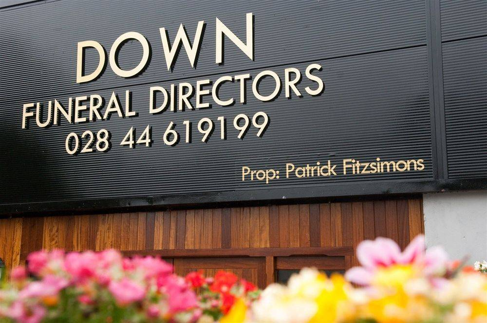

ABOUT DOWN FUNERAL DIRECTORS
A personal farewell.
Support throughout.
Down Funeral Directors serves Downpatrick, County Down and Carryduff, Greater Belfast, helping families with practical arrangements and a funeral that reflects the person who has died.
24-hour contactDownpatrick telephone
Two local areasDownpatrick & Carryduff
Personal arrangementsBurial, cremation & more
Personal care.
A local relationship.
Down Funeral Directors serves Downpatrick, County Down and Carryduff, Greater Belfast, helping families with practical arrangements and a funeral that reflects the person who has died.
Speak directly with the team about your wishes, the practical decisions ahead and any questions you would like to ask. Visits and arrangements should be agreed with the business.
